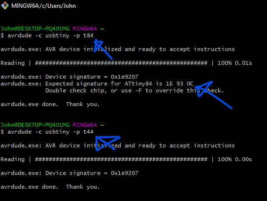

This is primarily a continuation from Project Software where I fabricated my board:
Due to time constraints, I will be primarily focusing on getting my elementary input and output devices such as my IR Receiver/Remote and DC motor working first.
Before we can program the board, I'll run a quick smoke test to ensure that the board is recognisable/working by connecting it to my ISP programmer:
Insert image of Tiny84 ISP connected to ISP programmer
Insert images of git bash here
I ran the command 'avrdude -c usbtiny -p t84':
As can be seen, I initally ran the command for the t84 instead of the t44 which we were using. It still showed that the board was working, showing that an AVR device was initialised with a signature. After rechecking my chip, I ran the proper command.
Now that smoke test has been completed without any magic smoke and our t44 is responsive, we can now proceed onto programming the board.
Now that the board works, we can start by creating a dummy program and burning the bootloader for the board, specifying settings such as the clock rate of the microcontroller.
Insert image here
Something interesting to note here is that there are two options for the pin layout on the Arduino, either clockwise or anti clockwise
Insert image here of spencekonde pinout
As can be seen,
Next I'll create a simple program to test the functionality of my IO pins.
It's a simple program where the IO pin is connected to an LED and resistor in series.
The IO pin will be set to toggle its logic level every 500ms, resulting in a flashing effect.
Insert video here
Next I'll test my servo pins, I'll write a similar program, this time setting the position of the Servo to 0 degrees, a short delay, followed by moving to 90 degrees before delaying again and repeating the cycle.
I will be using the IRremote library https://github.com/Arduino-IRremote/Arduino-IRremote
I'll start by creating a basic sketch for the IR receiver to work:
Refering to the documentation and the wikia example, the IRreceiver needs to be setup through the
I'll create a decoder function for my IR receiver as a start. I will also call it in my main loop.
For the moment, I'll just use a breadboard to demostrate and test the functionality of the IR receiver and remote combo as well as the code.
For the actual demostration, I'll use multiple Male to Female Dupont cables to jumper the IR receiver to the board.
Update: Turns out the Iremote library that I was planning on using is too large for the tiny84's flash, I'll
Insert images here: